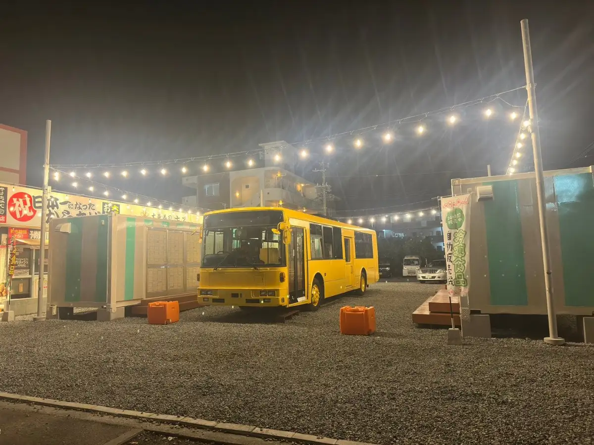
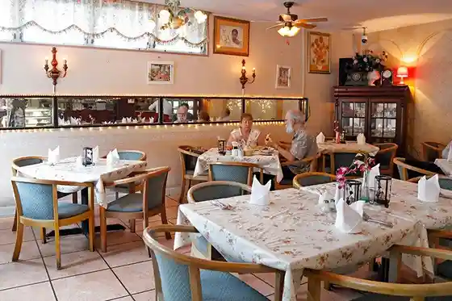

Japan / Okinawa / Kitanakagusuku
Kitanakagusuku
Kitanakagusuku · Okinawa
Kitanakagusuku
Highlighted on the Okinawa map.

Sights
39 Marushie Kitanakagusuku Mise
OKINAWA KIMONO Ie
Resutoran Rozu Garden

Kurashi no Hakko SPA
Kurashi no Hakko STORE OKINAWA
Toguchi no Tera (Ken Shitei Yukei Minzoku Bunkazai)